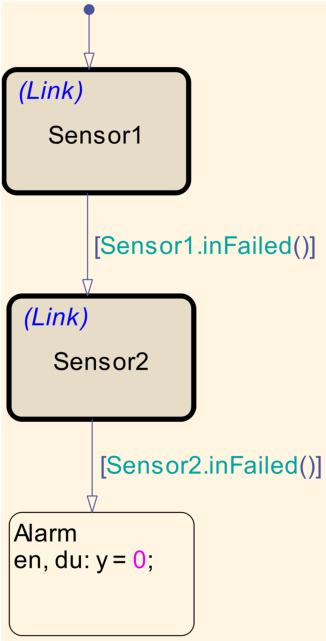
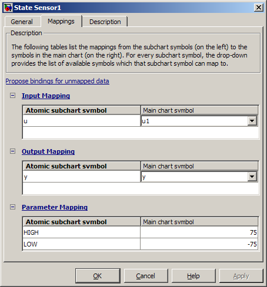

Atomic サブチャートを使用した冗長なセンサーの組み合わせのモデル作成
このモデルでは、Atomic サブチャートと呼ばれる新しい Stateflow® 機能を使用して、単純な冗長なセンサーの組み合わせのモデルを作成する方法を示します。この機能を使用すると、別のライブラリ ファイルにある他のチャートから大きなチャートを作成できます。
目次

メイン チャート
Stateflow のメイン チャートである RedundantSensors は、Sensor1 と Sensor2 という 2 つの「リンクされた Atomic サブチャート」で構成されています。
既定の設定では、Sensor1 がアクティブです。ここで入力 u1 が読み込まれ、出力 y が設定されます。Sensor1 が失敗すると、Sensor2 に切り替わり、ここで入力 u2 が読み込まれ、出力 y が設定されます。両方とも失敗すると、Alarm ステートになり、出力は公称ゼロになります。
Sensor1 と Sensor2 は「リンクされた Atomic サブチャート」です。これは見た目も動作も通常の Stateflow の状態と同じですが、リンクされた Atomic サブチャートの内容は別のライブラリ モデル内のチャートにある点が異なります。この例では、リンクされた Atomic サブチャートは両方とも sf_atomic_sensor_lib/SingleSensor ライブラリ チャートに対応しています。
ライブラリ チャート
SingleSensor チャートは、センサー入力 u を受け入れ、フィルター処理されたセンサー出力 y を生成する単一のセンサーのモデルを作成します。これには範囲外エラーを検出するロジックが組み込まれています。既定の設定では、センサーは "OK" 状態にあると想定されます。センサー読み取り値が範囲外になり (これは "OK" から "FailOnce" への遷移によってモデル作成)、そのまま 0.5秒間経過した場合、"Fail" に遷移します。この場合、センサーは定数 0 を出力します。これにより、センサーは障害のモデルを作成しますが、センサー読み取り値の一時的なスパイクを無視することができます。
次の点に注意してください。
- "OK" から "FailOnce" への遷移は、Stateflow チャート パラメーター "LOW" および "HIGH" に基づいて行われます。
- センサーが失敗したかどうかをコンテナー チャートに通知するために使用される "inFailed" という最上位の関数があります。
入力値、出力値、およびパラメーターのマッピング
メイン チャート RedundantSensors には u1 と u2 の 2 つの入力がありますが、リンクされた Atomic サブチャートに対応するライブラリ チャートには u という入力が 1 つあるだけです。この場合、リンクされたサブチャート Sensor1 がチャート入力 u1 にアクセスし、リンクされたサブチャート Sensor2 がチャート入力 u2 にアクセスするようにする必要があります。そのためには、リンクされた Atomic サブチャートの各インスタンスに対するマッピングを指定する必要があります。たとえば、Sensor1 を右クリックしてコンテキスト メニューの [Edit Subchart Mappings] を選択すると、次のようなダイアログが表示されます。

このダイアログでは、メイン チャートのシンボル (入力、出力、パラメーター) をライブラリ チャートのシンボルにマッピングできます。入力 "u" がメイン チャートの入力 "u1" にマップされているのがわかります。同様に、ライブラリ チャートで定義されているパラメーターには、サブチャートのさまざまなインスタンスの間で異なる値を与えることができます。
この場合、Sensor1 と Sensor2 のマッピングは次のようになっています。
| Sensor1 | Sensor2 | |
| u | u1 | u2 |
| HIGH | 75 | 100 |
| LOW | -75 | -100 |
シミュレーション動作
このモデルのシミュレーションを実行すると、次のような動作を見ることができます。
- 最初のメイン チャートへの入力は両方ともゼロです。したがって、出力はゼロになります。
- 最初の入力 u1 が -75 ～ 75 の間で変動すると、出力は u1 に追従します。
- u1 がこの範囲外に出るとすぐに、y は u2 に追従し始めます。
- u2 が -100 ～ 100 の範囲外に出ると、y は公称ゼロを出力するようになります。
このモデルを開いてシミュレーションを開始すると、この動作を見ることができます。チャートへの入力を変更するには、Gain ブロックをダブルクリックして、そのスライダーをドラッグします。